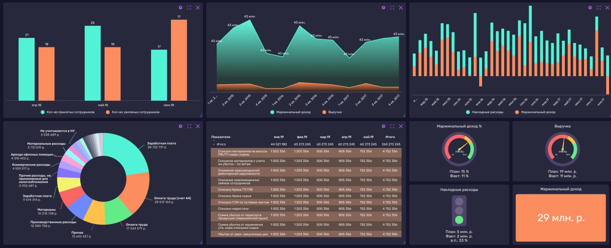

Система централизованной отчётности и предикативная модель операционных показателей
Инновационное решение для автоматизации сбора данных и прогнозирования ключевых показателей Московского Политеха
Узнать большеКлючевые особенности проекта
Централизованная отчётность
Единая платформа для сбора и анализа данных со всех факультетов университета.
Предиктивная аналитика
Модель для прогнозирования показателей на основе исторических данных.
Интеграция с системами
Подключение к 1С:Университет и другим внутренним системам.
Аннотация проекта
Проект направлен на создание комплексного решения для автоматизации процессов сбора, обработки и анализа операционных показателей Московского Политехнического университета. Система позволит консолидировать данные из различных источников, автоматизировать формирование отчётности и реализовать механизмы прогнозирования ключевых показателей с использованием различных методов для большей объективности.
